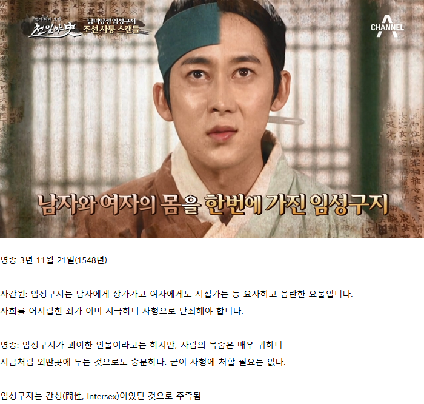

셀프임신 가능?
김원훈인줄
수랏간까지 진출해서 아수라인가
??? 내가 이 육개장 먹으려고 문상하러 다닌다면 믿겠니? 다 이거 한술뜨자고 사람이 사는거야
나도 어릴때 수라상이 그 수라인줄 알았는데
약간 조선왕조실록보면 저런 신하들이랑 왕이랑 백성들 벌주는거 약간 wwe 같은 느낌
신하 : 이새끼 존나 죽여야돼요(사실은 이정도 벌만)
왕 : 죽이는 건 넘 하고 이정도 벌만 주자
신하 : 성은이 망극하옵니다~
죽여주시옵소서만 봐도 wwe인거 알긴하지
왕한테는 최종 컨펌 받는거고
실무자들끼리 회의해서 합의해놓고
프레젠테이션 하는거지 ㅋㅋㅋ
누가 그러더라 어지간한 사항은 이미 국무총리급인 영의정이랑 합의 다 보고
어전에서는 서로 wwe 하는건데
거기서 갑자기 즈-----언-하------- 통------촉------하여 주시옵---소서-----
하는 순간 갑분싸 되는거라고 ㅋㅋ
합의되었다면서? 쟤는 외국 신하요?
간성을 성취향도 둘다가지냐?
간성 단어 검색해보니 순 우리말로 어지자지 라고 하네
신기하다 옛부터 있어서 단어까지 있었다는거네
자지요?
그렇다던데?
까비요
그리스 신화에 저런 인물 있었는데
테이리시아스